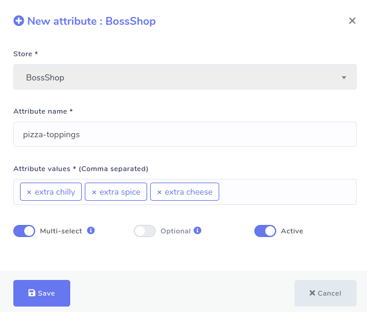
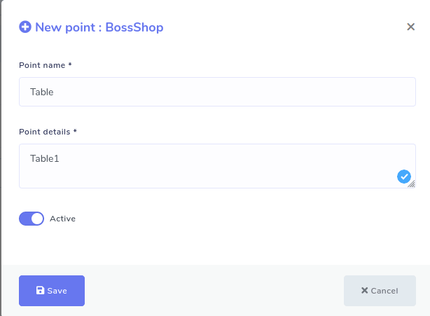
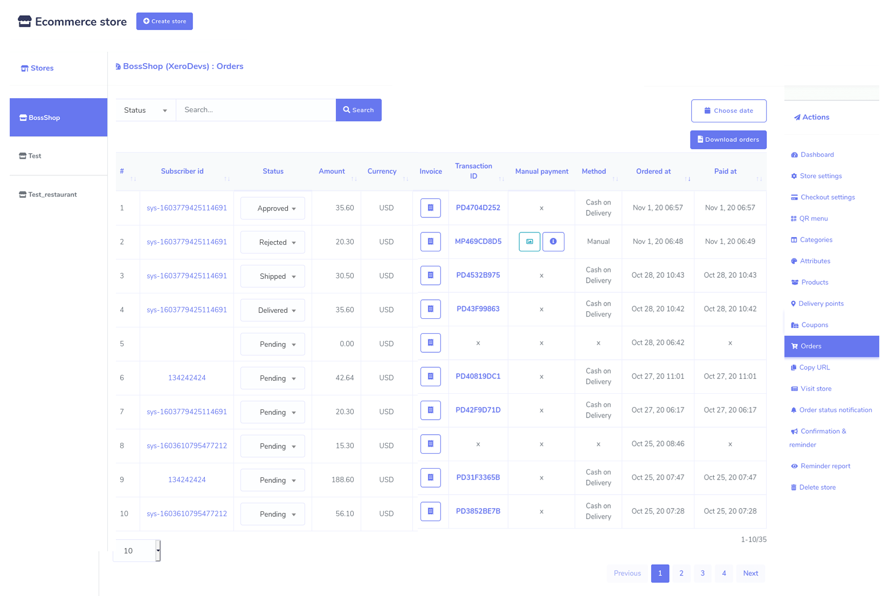
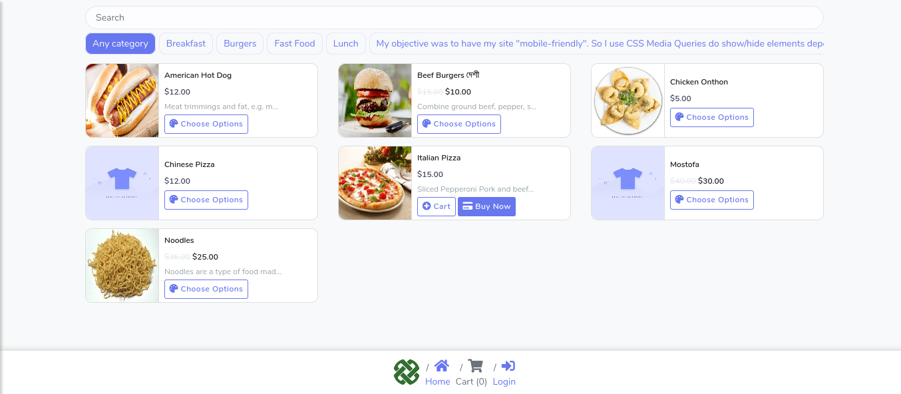
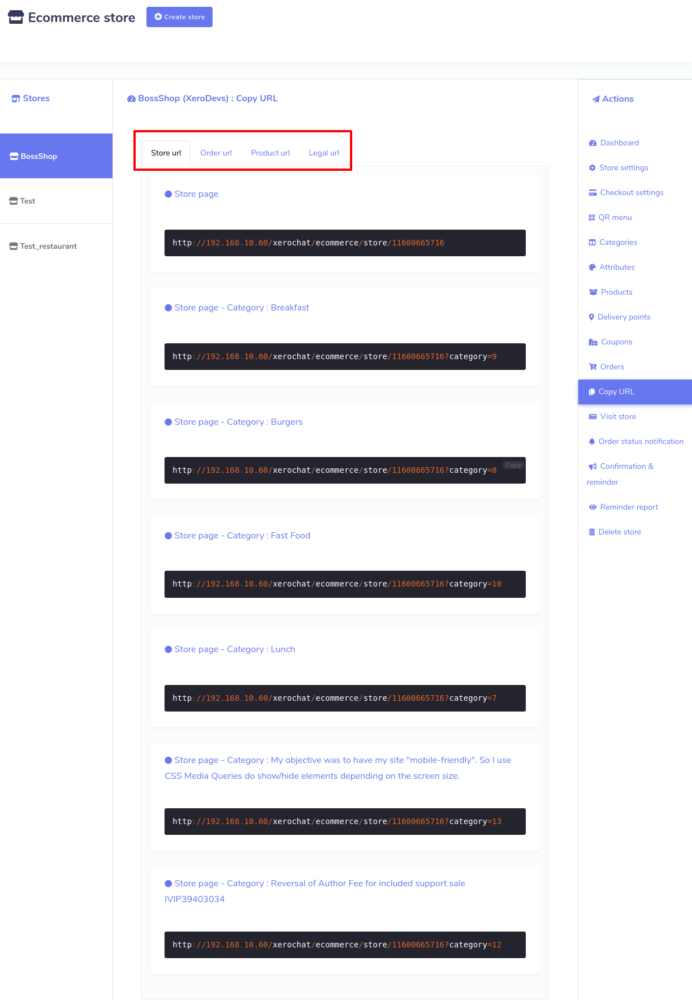
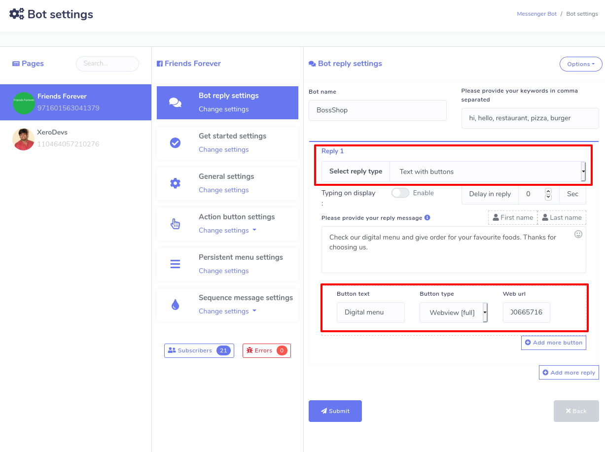

eCommerce
Ecommerce store is a special feature of ChatPion, the world’s best marketing software. With the feature, you can generate a virtual restaurant that will be opened both inside the Facebook Messenger and on the browser.
Just after creating your virtual restaurant, it will provide you two QR codes-- Messenger QR code and browser QR code. You just have to supply the QR codes to your customers. Just as your customers scan the Messenger QR code, straightway, your virtual shop opens inside your messenger. Likewise, just as they scan the browser QR code, your virtual shop will open on their browsers. Because of the QR codes, your customers will get rid of finding your Facebook page, sending messages, and entering your virtual restaurant’s link on their browsers.
Besides, the virtual restaurant will provide two urls under the QR codes-- Messenger url and browser url. Just like QR codes, Messenger url will be open inside the messenger and browser url will be open on the browser.
Generate virtual restaurant
First, you have to create a store for your virtual restaurant and add food items to the store. Then you have to make some settings so that your virtual restaurant works properly.
To create a store, go to the left panel of the ChatPion Dashboard > click on the 'Ecommerce store' menu.

Just as you click on the Ecommerce store the interface of the Ecommerce store will appear with a Create store button at the top of the page. And other existing stores listed will appear under the ‘Store’ menu on the left side. After selecting any existing store, you can add more products to the specific store and edit settings.
Create new and edit existing store
Well, to create a new store, you have to click on the Create store button first. Instantly, a form will appear. You have to fill out the form-- selecting a Facebook Page, providing some initial information about the virtual restaurant, writing down the Terms of service and refund policy, and uploading the logo and favicon.
In the form, there is a special box called local that needs a bit of explanation. Just as you click on the box, a drop-down menu of some languages will appear-- you can select any language. Your virtual restaurant will open in the language that you select. For example, if you select English, your virtual restaurant will appear to your customers in English.

There are two boxes called, ‘Facebook Pixel Id’ and ‘Google Analytics Id’ that also need a bit of explanation.
Facebook Pixel Id is a piece of code you can place inside the source code of your website. The code automatically can collect and store data of your website visitors. Because of Facebook Pixel code, you can run Facebook Ads for targeted audiences who have visited your website before using the data. Please visit the link to see how to create Facebook Pixel Id.
Google Analytics Id also works like Facebook Pixel Id to re-target your website visitors in the Google ads. Please visit the link to learn how to create Google Analytic Id.
Anyway, after filling out the form, click on the Create store button at the bottom of the form. If you fill up every compulsory field properly, a pop-up box will appear with a successful message.
Add Category
Now you have to add some categories to your store so that you can add food items in different categories. The category is an important thing to arrange your food items. If your food items are organized properly, your clients can look over different food items and choose from them easily. To add a category, click on the option called ‘Categories’ in the ‘Action menu’ at the right side of the Dashboard. Instantly, a page will appear with the Add category button at the top-right of the page.

Click on Add Category > write down the category name > Click on the ‘Save’ button.
Now click on the Add Category button and straightaway, a pop-up form will appear. You have to fill out the form— writing down a Category name. Then click on the Save button. Now this category has been added to your store.

Of course, you can add as many categories as you want. And all your categories with edit and Delete buttons will be listed on ‘Categories’ page. By clicking on the edit edit and delete delete button, you can edit and delete the category. You can also see the status of the category-- whether a category is active or not.
Add Attribute
To add the attribute, click on Attributes > Add Attribute > write down Attribute Name > provide Attribute Value > Enable or Disable two radio buttons as you see fit > Save.
Just as you click on the Attributes option in the Action menu at the left side of the dashboard, a page called ‘Attributes’ will appear with the ‘Add attribute’ button at the top-right of the page.

Now click on the Add attribute button and a pop-up box will appear. In the box, you have to write down the name of the attribute and give attribute values in comma-separated. Then enable or disable three buttons called ‘Multi select’, ‘Optional’, and ‘Active’ as you see fit for the attribute.
By the Active button, you can make the attribute Active or Inactive. The functionalities of the other two buttons are a bit complicated to understand. If you enable the Multi-select button, your clients can select the multiple attribute values of the same food item. If you add an attribute called ‘Pizza toppings’ and add three values like ‘Extra Chilly’, ‘Extra spice’ and ‘Extra cheese’ and turn on a multi-select button, your customers can order a Pizza that has Extra Chilly, Extra spice, and Extra cheese at the same time.
On the other hand, if you disable the Multi-select button, a client can only one attribute value for a specific food item. For example, if you disable ‘Multi-select’ for an attribute called ‘pizza toppings’ with three values called ‘Extra Chilly’, ‘Extra spice’, and ‘Extra cheese’ a client can only order a pizza either with extra chilly, extra spice or extra cheese.

As for the multi-select button, you have to keep in mind that you can’t enable the multi-select button for the attributes like ‘Size’ because a food item can’t be small, medium, and large at the same time-- it is not logically possible. But you can enable the multi-select button for the attributes like toppings because toppings can have Extra Chilly, Extra Spice, and Extra Cheese at the same time. Moreover, for attributes like pizza toppings enabling the multi-select button is useful because then customers can order a pizza that has extra Chilly, extra spice, and extra cheese in the toppings at the same time.
On the other hand, if you turn on the Optional button, your clients can avoid selecting attributes for a specific food item. Then the clients can order specific food items that have no additional ingredients. For example, if you enable the Optional button for ‘Pizza toppings’, a client can order a pizza with toppings that has no extra ingredients.
But if you disable the ‘Optional’ button, the clients must choose an attribute. Otherwise, he/she can’t order the food item. Disabling the ‘Optional’ button is required for attributes like size, for a client must select a value for size whether it is small, medium or large. Otherwise, they can’t order a food item.
Then comes the ‘Active’ button. If you turn on the active button, the attribute will appear when you add a food item to the store and otherwise not.
Like the Category option, after you have added one or more attributes, the attributes will appear on the page. Of course, you can add as many attributes as you want. Well, from the page, you can edit and delete any attribute you want and can see the status of the attributes.

Add products to the store
After you have added categories and attributes, you add food items that could be included in categories and attached to the attributes.
Click on the Products > Add product > Fill up the form > click Save button.
To add products, click on the ‘Products’ option in the ‘Action’ menu on the left side of the dashboard. Straightway, the Products page will appear with the Add product ‘Add product’ button at the top-right position. Now click on the button and a form will appear. You have to fill out the form to add the product-- providing some initial information about the products, selecting categories and attributes. Moreover, you have to upload thumbnails and featured images of the products-- you can upload one more image of the products in the featured image option. Filling-out the form, you have to click on the Save button. Instantly, your food item will be added to your virtual shop.

Likewise, you can add thousands of food items. And all the food items will be shown on the page. And you can edit, delete and clone the food items and see the product page of the product by the action button. Also, you can see the price and status of whether the product is active or inactive.

Checkout settings
Now you have to make a checkout setting for your virtual restaurant. ChatPion’s ‘Ecommerce store’ has integrated some online payment methods-- PayPal, Stripe, Mollie, Razorpay, Paystack so that your customers can pay via the payment methods easily. Besides, it supports manual payment and cash on delivery systems.
Now you can make a specific checkout setting for a specific store.
Action > Checkout settings
To make a checkout setting, click on the ‘Checkout settings’ in the ‘Action’ menu at the left side of the store dashboard. Instantly, appear a form that you have to fill up. First, you have to provide your account information for any or some of the online payment methods that you want to enable. Then you have to write down the instruction for manual payment in the text area called ‘Manual Payment Instruction’.
After that, you will get a checkout payment option. From here, you can enable any online payment methods and manual checkout for your store. And ‘Cash on Delivery’ is enabled by default.
After that, you will get the ‘Currency and Label’ option. Here, you have to select the currency of online payment methods, the currency through which the clients will give the payment. For example, if you select USD(Dollar) for PayPal and Stripe, your customers have to pay in Dollars via PayPal and Stripe. Then you will see, in a row, three radio buttons called Right alignment , Two decimal , and Display comma. By placing your mouse cursor on the tooltips, you can see the functionality of these buttons. Then you have to put labels for the ‘Buy Now’ button and Store Pickup title.
Then came the Tax and Delivery charge option. Here, you have to provide the amount of Tax in percentage and delivery charge.

Then comes the address preference area. At first, you see a radio button called Store Pickup. If you enable the button, the clients can give food orders via your virtual restaurant and receive food items sitting at the table of your real restaurant. But if you disable the Store Pickup button, you have to give a delivery address where the food will be delivered. Next to the Store Pickup button, you will see a button called Delivery note . If you enable the ‘Delivery note’, button, your clients will get a text area where they can write a delivery note. In the delivery note, they can tell you how they want the delivery. For example, he can tell that they want the delivery person to wear a mask while delivering the food.
Then come some radio buttons, by disabling and enabling them, you can determine which piece of information your clients have to provide while giving their delivery addresses. The importance of the buttons is that most of the time, you don’t need the country, state, city, and country zip, because you already know the area of your clients. So you don’t need to bother your valued customers to provide his country, state, city and country zip you know beforehand. On the other hand, if you are uncertain of your customers’ area, enable country, state, city, and country zip so that they have to provide them.
After filling out the checkout setting form, click on the Save button and your checkout setting is set.
Delivery Points
Since you have enabled the store pickup option, you have to set the delivery points. To do this, you have to add point names and point details. As for a restaurant, delivery points would be table and point detail would be table number. To add a delivery point, click on the ‘Delivery points’ on the left side of the dashboard. Instantly, a page will appear with the Add point button at top-right position. Click on the button and a pop-up form will appear. Then you have to fill-out the form by providing point(Table) and point details (For example, Table 1).

Coupon
If you want to give discounts on some specific products, coupons are required.
Well, to make coupons, click on the coupons option in the ‘Action’ menu at the left side of the Dashboard. And instantly, appear a form you have to fill out to create a coupon.
At the products field, you have to specify the products the coupon will be applicable.

In ChatPion's Ecommerce store, you can make three types of coupons, such as Percent, Fixed cart, and fixed products. Now you have to select any of the three types of coupon code. Before selecting, you have to understand the functionality of each type of coupon.
Let's explain them:
Percent– Percent coupon type is applicable for selected products only. For example, if the cart contains three (3) t-shirts @ $20 each = $60, a coupon for 10% off applies a discount of $6.
Fixed cart –A fixed total discount for the entire cart. For example, if the cart contains three (3) t-shirts @ $20 each = $60, a coupon for $10 off gives a discount of $10. This coupon type will be applicable for all the products you have added to cart whether you have selected the products or not.
Fixed product – A fixed total discount for selected products only. Customers receive a set amount of discount per item. For example, three (3) t-shirts @ $20 each with a coupon for $10 off applies a discount of $30.
Then you have to fill out the following boxes:
Coupon Code- Now give code for the coupon. Your customers will use the code to get discounts on the products the coupon is applicable to.
Coupon amount- Then you have to provide the amount for the coupon. Depending on the discount type you choose, the coupon amount will be a Fixed value or percentage. Enter the amount without a currency unit or a percent sign, which will be added automatically based on the discount type you choose e.g., Enter ’10’ for £10 or 10%.
Coupon expiry date– Date the coupon should expire and can no longer be used.
Max usage limit- You have to specify the number of times the coupon could be used before reaching the expiration date.
Coupon deactivate- By disabling the status button, you deactivate the coupon anytime.
Free shipping – If you enable Free shipping, the shipping cost will be removed when the coupon is used.
Orders
You can see the details of the orders given by your clients on a page called Orders. Most importantly, using a thermal printer, you can print the invoices for the orders easily. To see the details of orders and print the invoices, click ‘Orders’, in the ‘Action Menu’ at the left side of the dashboard. Without delay, all the orders listed will appear on the page. Move the bottom scroll bar to see the whole details of the orders. From the page, you can change the status of the orders. Click on the ‘Status’ field beside the specific order and a drop-down menu with ‘Pending’, ‘Approved’, ‘Rejected’, ‘Shipped’, ‘Delivered’, and ‘Completed’ will appear. Now you can select one of them to see the status of the order later.

To print the invoice, click on the invoice field. Instantly, the order invoice will appear ready to be printed. At the top of the page, you will see three options — Large A4, Thermal 88mm, Thermal 57mm. Click on one of them and the print option will appear. After the invoice printed, give the copy to your cook. By clicking on the button called Choose date, you can see only the orders given at a specific time such as the last month. Also, you can download the list of orders in a CSV file by clicking on the Download orders button.
Confirmation and Reminder
If you make a setting, Confirmation and Reminder can send abandoned cart recovery reminders to the clients if they leave your virtual restaurant after adding food items to the cart. It is a very important feature because it can recover lost sales by bringing back the potential customers to your virtual restaurant. As well, the feature can send confirmation messages just as they finish purchasing so that the customers could be confirmed about their purchase.
To make a setting, click on the ‘Confirmation and Reminder’ option in the left menu. Instantly, appear a form you have to fill-out. At the top, you will see three options-- Messenger, Sms, and Email. Select Messenger to send Confirmation message and Abandoned Cart Recovery Reminder via Messenger and select Sms and Email respectively.
Well, if you want to set the confirmation message for messenger, first, select messenger at the top of the form, and next, select ‘checkout messenger’ at the bottom-right of the form. After that, you have to write the content in the ‘messenger content’ box. And the My Order button, the order page link embedded, will be automatically added to the confirmation message. That is, your clients will get the message along with the ‘My Order’ button. And clicking on the button, the client can see the order history. Of course, you can change the label of my order button.

Likewise, you can set confirmation messages for Sms and Email.
On the other hand, ChatPion’s Ecommerce store can send three abandoned cart reminders successively within one hour to 24 hours. And you can set each abandoned cart reminder differently. Like confirmation messages, to set abandoned cart reminders for messenger, first, select messenger at the top then select any of the messenger reminders. Then click under it and a drop-down menu will appear. From the drop-down menu, you can select the hour (from 1 hour to 24 hours) you want to send the reminder at. Of course, you can stop the reminder by selecting the ‘do not send’ option from the drop-down menu.
You can edit or rewrite the content in the ‘Messenger content’ box.
The product link is embedded in a button called the View Details , the product link embedded and the ‘Checkout’ button with the checkout page embedded would automatically be added to the reminder. Of course, you can change the labels of the two buttons. By clicking on the View Details button, the client can see all the items added to the cart. As well, by clicking on the Checkout button’, the clients directly enter the checkout page. You can also insert a coupon code, while editing the content, in the message box to give discounts on the products.
If a client leaves your virtual restaurant and returns and finishes purchasing before an abandoned cart recovery is sent, the abandoned cart recovery reminder will be stopped automatically, and instead, a confirmation message will be sent. Likewise, getting an abandoned cart recovery reminder, if a client returns to your virtual restaurant and finishes purchasing, other recovery reminders in a queue will be stopped, and instead, a confirmation message will be sent.
Reminder Report:
You can see the Abandoned Cart Reminder report by clicking on the
Reminder report
at the left panel of the Dashboard.

Confirmation and Reminder
Once you have finished creating your virtual restaurant, you need the QR codes to provide them to your clients-- scanning the QR codes, your clients can easily enter your restaurant not only via Facebook Messenger but also on the browsers.
To get the QR codes, click on the QR menu and straightway, the ‘QR menu’ page will appear. On the page, you will see two QR codes-- one for messenger and the other for browsers. Clicking on the Download button, you can easily download the QR codes.

Now print the QR code and attach it to any suitable place, for example, on the wall, and on the table so that your clients can easily notice and scan the QR code to enter your virtual store, meaning to get the virtual menu. Once the QR code is scanned, the virtual menu will appear on your mobile screen inside messenger or on browsers. From the virtual menu, your clients can choose foods and give orders while sitting at the table of your restaurant without talking to your waiter.
In the COVID-19 pandemic, the QR code menu becomes essential because by using it, people needn’t come in direct contact with any person while eating out.
Under the messenger QR code, you can write a welcome message for your clients. After writing the message, click on the Save button. Then your QR code will hold the message you have written.
Visit store
To check how your virtual restaurant is set, click on the ‘Visit store’ option in the ‘Action Menu’ and you will redirect to your virtual restaurant in a new tab.

Copy url
Once you finish creating your virtual restaurant, the ‘Ecommerce store’ has made different urls— Store url, Order url, Product url, and Legal url-- for your virtual restaurant.
You need the urls if you want to integrate your virtual restaurant directly to Facebook page messenger. And if so, your clients have to send messages to the Facebook page to get access to your virtual shop.
To get the urls, click on the ‘Copy url’ option in the ‘Action menu’ at the left panel of the dashboard. Instantly, the copy url page will appear with four types of urls. You need the two types of url—Store url and Products urls-- to integrate the restaurant to the Facebook page.

Now copy the store url and product urls and go to the messenger bot of the ChatPion.
Click on the Messenger bot > bot settings > action> add bot reply> fill out the bot reply settings form.
At the top of the messenger bot feature, you will see ‘bot settings’. Click on the action button, instantly a page called ‘bot settings’ will appear. Click on Add bot reply at the top-right position of the page and appear a form you have to fill up to integrate your virtual restaurant with Messenger bot.
At first, you have to provide a bot name and keywords in comma-separated. Based on the keywords, the bot will reply. Now, you have to select the reply type. To integrate your shop with Messenger, you have to provide urls copied from your virtual restaurant. Therefore, you have to select any of the reply types that come with button types that support urls. Anyway, select text with button’ reply type and any of the web url and webview buttons. Select the web view full and a box called web url will appear— past the url here. If you provide a store url, the entire shop will appear inside the Facebook messenger, whereas for the product url, the specific product will appear. Clicking ‘Add more button’ and ‘Add more reply’ button, you can add more buttons and replies.

Moreover, by the postback button, you can provide products in categories. Eventually, click on the Submit button to save the bot settings for your virtual restaurant. Now the Messenger bot will handle your virtual restaurant inside the messenger. That is, your clients can enter your virtual restaurant by sending messages.